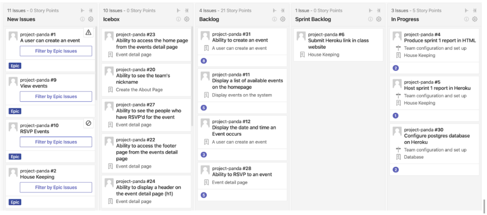

Team assigned nickname: golden-pond
Team members: Daniel (daniel.fernandezpalomares@yale.edu), Sara (sara.kostanteen@yale.edu), Nitya (nitya.kanuri@yale.edu), Darlington (darlington.egbor@yale.edu)
Report Created: Oct 31, 2019
The sprint started a little slow and then as roles were assigned and the team agreed on the direction of the project and work to be divided, the pace picked up. One of the main challenges was to find time to meet and kick off the project. What worked here was the clarity on deliverables we had from our stories. We used this list to pick up different stories and work on them. Since individuals on the team were very busy, we coordinated through brief meetings, WhatsApp and calls to ask for urgent things. To better plan our time, we set up a when2meet across the entire during of the project.
These are the stories we will be taking into the sprint to work on this week. Displayed in order of priority and estimated effort required.
The main goal of our next print for users to be able to create events, see available events as well as the ability to RSVP events.
Below is a screenshot depicting the stories in our product backlog. Over the coming weeks, we will populate the system with more user stories to help us deliver the project.
